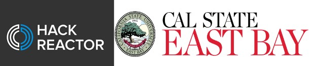

Education
In August 2023, I achieved a significant milestone by graduating from Hack Reactor's Software Engineering Certificate program. During this intensive course, I immersed myself in the fascinating world of programming, mastering languages and technologies such as Python 3, JavaScript ES6+, SQL, HTML5, CSS, React, React Hooks, Django 4, PostgreSQL, and FastAPI. But beyond just learning the technical skills, I embraced the creative and analytical challenges that come with software development. The projects I worked on became a playground for innovation, and I'm thrilled to share some of them with you here.
Before my journey into coding, I was studying Criminal Justice at California State University, East Bay, where I graduated in 2020 with a B.S. in Criminal Justice. Despite my educational background, I always had a passion for computers and was fascinated by the way technology shapes our lives. While the legal field was appealing, I found myself drawn to the challenges and creative opportunities offered by software development. Enrolling in Hack Reactor was a pivotal decision, and it opened a door to a world of logical thinking, problem-solving, and innovation. Combining my unique insights from the legal field with technical skills, I've found a fulfilling path where I can contribute in new and exciting ways. My experience has taught me to approach coding with a fresh perspective, and I'm excited about the endless possibilities and the positive impact I can make in the tech industry.